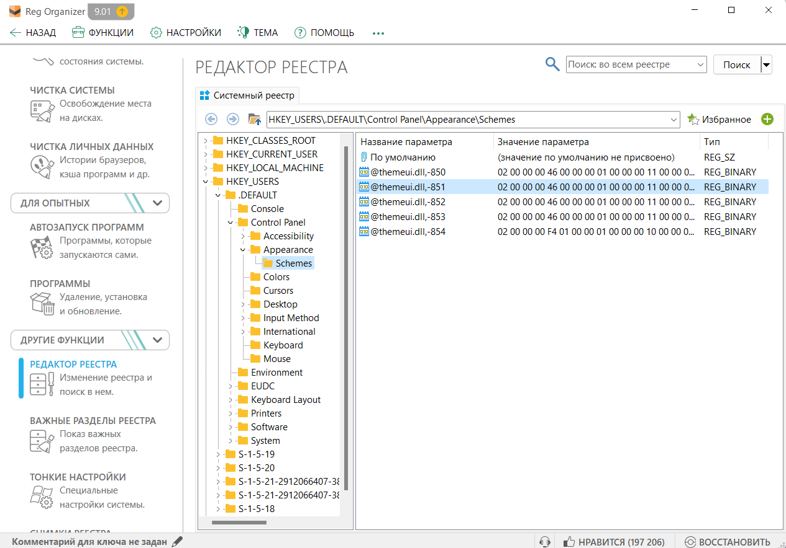

Немного об Reg Organizer

Reg Organizer (RO) – проприетарное программное обеспечение, предназначенное для полного удаления программного обеспечения, настройки автоматически запускаемых приложений, расширенной чистки и оптимизации Windows, управления системным реестром Windows.

Основные возможности Reg Organizer
- Инструмент деинсталляции с поиском остатков программ - Использование Reg Organizer для деинсталляции программ и удаления их следов поможет удалить нежелательные приложения и их следы, тем самым предотвращая засорение реестра системы и дисков ПК. Это очень полезно, поскольку не все программы после удаления удаляют свои остатки и файлы конфигурации в системном реестре. Эта функция работает благодаря технологии Full Uninstall, разработанной специалистами ChemTable Software.
- Расширенный менеджер автозапуска - Менеджер автозагрузки поможет вам контролировать приложения, которые автоматически запускаются при каждой загрузке ОС. Это позволит вам освободить ценные ресурсы для других целей и в некоторых случаях ускорить время загрузки и работу операционной системы Windows.
- Автоматическая очистка Windows. Функция автоматической очистки позволяет удалить большое количество ненужной информации и освободить место на системном диске. Она также позволяет удалить нежелательные или ненужные обновления, старые версии Windows и многое другое.
- Тонкая настройка ОС Windows. Возможность изменять многие недокументированные настройки Windows (твики). В частности, он может ускорить работу вашей системы, отправив системе команду на увеличение объема кэш-памяти или выгрузив неиспользуемые библиотеки и т.д.
- Расширенный редактор реестра. Расширенный редактор реестра в Reg Organizer позволяет выполнять различные операции с системным реестром – вы сможете экспортировать, импортировать, копировать значения ключей и делать многое другое. Редактор реестра Reg Organizer имеет гораздо больше возможностей, чем стандартный редактор реестра, используемый в Windows.
- Поиск и замена в реестре. Поиск и замена в реестре позволяет находить ключи, связанные с конкретным приложением, и при необходимости удалять их. Это полезно, например, в том случае, когда приложение не имеет инструмента деинсталляции и после его "ручного" удаления в реестре остаются нежелательные файлы, которые могут повлиять на работу других приложений. В то же время Reg Organizer производит более глубокий поиск и часто позволяет найти даже те ключи, связанные с данным приложением, которые не могут быть найдены другими подобными программами.
- Редактор файлов реестра. Редактор файлов реестра предназначен для редактирования ключей и параметров, а также для добавления и удаления содержимого.reg файлов. Это очень полезный инструмент для переноса настроек программ с одного компьютера на другой. В отличие от редактора реестра Windows (regedit), этот редактор файлов реестра может создавать модульные файлы reg, содержащие различные ветви ключей реестра.
- Просмотр файлов реестра. Просмотр файлов реестра (*.reg) перед импортом их содержимого позволит вам изучить данные перед импортом. При просмотре reg-файла, который вы хотите импортировать, его содержимое отображается в виде дерева в Reg Organizer. Это позволяет наглядно представить все ключи, которые будут импортированы в реестр.
- Отслеживание ключей реестра. Отслеживание ключей реестра поможет контролировать действия любой программы и детально увидеть все изменения, внесенные в реестр.